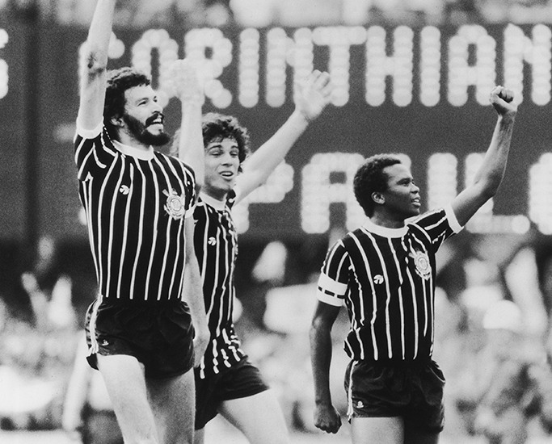
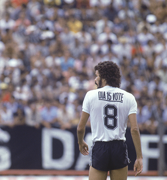

“Cada documental es una especie de aventura en el corazón y en el alma de ciertas personas”
Albert Maysles
A mediados del 2013 un hombre con una fortuna superior a los 3,100 millones de dólares gritaba ferozmente el título de su equipo. Emilio Azcárraga Jean, dueño de Televisa -una de las empresas más importantes de comunicación en Hispanoamérica- festejaba con el torso desnudo bajo una ligera lluvia el campeonato del América, el club que le heredaron y que las dos generaciones anteriores (la de su abuelo y padre) lo hicieron uno de los más populares de México.
¿Por qué Emilio, acostumbrado a que su empresa facture más de 5,500 millones de dólares al año, festeja tan pasionalmente un negocio que le genera pérdidas?
Televisa es una compañía que gana dinero con la generación de contenidos para televisión, forma parte de la industria editorial, de cable y telecomunicaciones, de publicidad, y en todas estas divisiones hay casi siempre resultados positivos. Pero uno de los pocos “business” que le han ocasionado más pérdidas es el de la operación de su equipo: el América.
Bajo el mando del medio de comunicación, las Águilas han logrado 11 títulos de Liga y dos copas Interamericanas como sus éxitos más importantes, pero de utilidades muy poco; apenas puede presumir que el año pasado el club le trajo buenas noticias, pero se había hecho una costumbre que no ocurriera así.
Incluso en este 2014, según reportó Televisa a la Bolsa Mexicana de Valores, las noticias no son buenas. Durante el primer trimestre de este año, la compañía informó a la BMV: “Tenemos mayores costos en nuestro negocio de futbol” y para el segundo trimestre relató “una disminución en los ingresos como resultado de una menor venta de boletos”.
Por alguna extraña razón, nuestro país es ajeno a los documentales deportivos. Basta una búsqueda en el sitio web de la tienda que monopoliza la venta de música y video para corroborar esa idea. Hemos visto cómo procrean los osos, somos expertos respecto a los secreto del cosmos, y tenemos doctorado televisivo sobre los mitos del antiguo Egipto. Si nuestra educación constara de los documentales puestos a la venta en librerías y tiendas, seríamos excelentes biólogos, antropólogos o una combinación entre historiadores y agentes de viajes.
Los documentales deportivos mexicanos no figuran en la cartelera y tampoco en las tiendas. Hemos recuperado la memoria histórica de lo ocurrido en Tlatelolco, y tomamos conciencia del reto que implica para los centroamericanos internarse clandestinamente en nuestro país en busca del sueño americano; pero cuando se trata de obras mexicanas la lista se reduce a las tragicomedias de Julio César Chávez y de la selección mexicana.
“Las imágenes y sonidos que el documentalista encuentra siempre serán más significativos que cualquier cosa que se pueda inventar”
Erik Barnouw
Sin embargo, en Estados Unidos existe un boom del género. Pese a que no son un género cinematográfico que produzca ganancia, las televisoras están gastando más dinero para ponerlos en su programación. En 2009, ESPN apostó por el género documental con su serie “30 for 30”. A partir de ese momento varias cadenas televisivas han decidido invertir en el formato. Como lo señala el presidente de HBO Sports, Ken Hershman, “el cambio en el mercado y la explosión de los canales de televisión están creando una creciente demanda de documentales deportivos”.
Los documentales nos regresan en el tiempo y pueden reafirmar lo que sabíamos o cambiar totalmente lo que creíamos. A partir de esa otra forma de hacer periodismo es que estamos expuestos a un nuevo mundo. Muchos historiadores obsesionados con la precisión los descalifican con el argumento de que sólo buscan el entretenimiento. Un documental no es un libro de historia, como tampoco el libro del Apocalipsis lo es; sí es una presentación de información factual retratada a través del uso de imágenes.
Las portadas de los diarios están compuestas principalmente por los mejores jugadores, pero Steve James nos mostró en “Hoop Dreams” cómo la mayoría de los jugadores de baloncesto se quedan en el camino hacia la NBA, y expuso en “Head Games” las consecuencias físicas y emocionales que derivan de los deportes con excesivo contacto físico. Existe un sin fin de momentos tanto gloriosos como traumáticos en el deporte; todos son compuestos por seres humanos. El cine es una autorización para ver y escuchar los corazones y las mentes de esas personas, y de conocer su historia.

Democracia em preto e branco
Un momento específico en que el fútbol popular y los artistas de rock se vuelven el eco del canto del pueblo por la democracia.

“Brasil no es un país serio”
Charles de Gaulle.
Dilma Rousseff ha sido reelecta como presidenta de Brasil. No obstante, el costo ha sido un país dividido entre los pobres que no han querido perder lo conseguido en doce años, la naciente clase media surgida de las reformas, y la clase alta que se siente ajena a las decisiones del poder.
Democracia em preto e branco es un recuerdo nostálgico de las formas de auto organización en un equipo de fútbol. También es un viaje en el que el futbol y el rock and roll surgieron como vehículos de las demandas democráticas de una sociedad que despertaba de la larga noche de la dictadura.
Los brasileños han votado con plena libertad. Hace treinta años, cuando Sócrates Brasileiro comandaba la democracia corinthiana, los brasileños luchaban por poder elegir a su presidente. Hubo un tiempo en que los futbolistas defendían las aspiraciones más nobles de la sociedad. En el pasado mundial, los seleccionados brasileños se vieron obligados a defender en el campo la imagen de su presidenta.
;){kind=link}